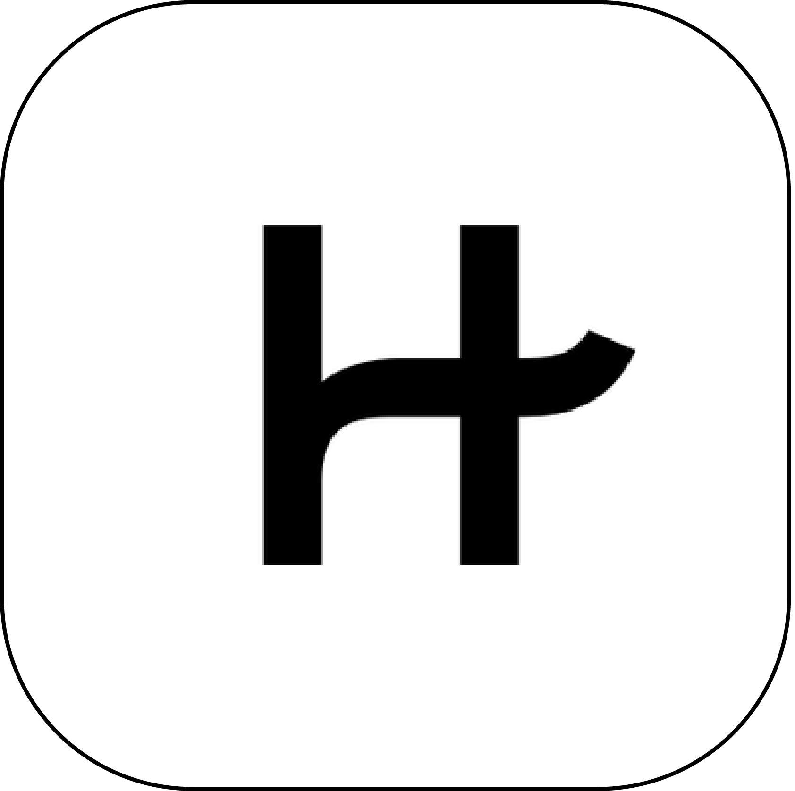

Back
DINNR
FIND DATES, NOT JUST MATCHES
MY ROLE
•
UX Designer in collaboration with Amy Zhou and Karman Li
TIMELINE
•
May - July 2021 (12 weeks)
PROBLEM
Dating app users are frustrated from dead end conversations that don’t
lead to in-person dates.Â
Growing up in the digital age, dating apps are very common yet there’s
still stigma around the dangers of meeting online people in real life.
Many users find that conversations lead nowhere when a physical date
isn’t initiated.Â
THE SOLUTION
Incorporate restaurant booking and dinner date invitation into the app
as a core task.
1
Invite and Schedule Dinner Dates
•
Increases your change of meeting your matches face-to-face
•
Provide less friction to initiate dinner date when on the same
platform
•
Connect through interest in food

2
Creating Trust on the Platform
•
More extensive profile creation process
•
ID verification when onboarding platform
3
Partnership with Restaurants
•
Simplify booking process
•
Track, manage and reminders for dates
•
Incentivize dinner dates with deals from paid restaurant
partners

COMPETITIVE ANALYSIS
The competition has no incentive for in real life meet up
During the research phase of this project, I conducted a competitor
analysis of other websites/apps that have similar interfaces to DINNR. I
analyzed the 4 most populat dating apps. I found that none of these apps
included meeting up as a core task. This then became my opportunity for
the solution.

HINGE
Hinge is a social discovery app, connecting users with friends of
friends from Facebook. It's a dating app with a purposefully limited
pool of potential matches for each user. Your potential matches will
know someone that you are friends with on Facebook. Hinge is
targeting people looking for a serious relationship.

TINDER
Tinder is an online dating and networking app. Users can like or
dislike profiles by simply swiping left or right. Profiles include a
short bio, interests and a few photos. Users can only start
connecting if both users match. Tinder has a looser filter system
and is targeting people looking to explore and connect.

OKCUPID
OKCupid generates matches by applying data generated by users'
activities. When answering questions users choose their answers, the
answer they would accept from a partner and level of importance of
that question. OKCupid then uses an algorithm to calculate and
present potential matches.
MATCH.COM
Match.com is a dating website where users create a profile and start
connecting with others. The profiles are more extensive compared to
other dating apps so its great for screening before committing to
conversations. The targeting audience for Match.com is more mature
and looking for serious relationships.
USER INTERVIEWS
My interviewees all agree that in person meeting is a critical step
before a successful relationship is formed
Although I saw from my research that in real life meet ups is very
important and a crucial step before relationships are formed, I've
conducted interviews with 20 users between the ages of 20-35. I've asked
them questions below to find trends on why they prefer to meet someone
in real life.
Interview Questions
1. How many people do you end up meeting after matching on previous
dating apps?
2. Out of the people that you meet up with, how many do you continue to
keep in contact?
3. What are you motives for joining a dating app?
4. Which dating app do you use the most?
5. Have you met up with anyone through a dating app?
6. What would make you feel more comfortable to meet up?
7. What would you change about the current dating app you use?
8. What makes you stop using the dating app?
The Main Insight:
My interviewees did not find success in previous dating apps because the
core task of the app was to match you with compatible people but there
were no initiatives for in real life meet ups.
Based on the trends that I found after the interview and surveys, I
found that the majority of successful relationships must have an in real
life component. All of the interviewers said that even when
conversations are going well, not all matches will initiate a meeting in
real life. Most felt overwhelmed by the amount of matches and
conversations made.
Major Insights:
Taking initiative from both parties is difficult when transitioning
from online to IRL meet up.
User are often disappointed after meeting up as profile was set up
with too high expectations
My interviewees noticed the user base depends on the tone set for the
app. Eg. Casual dating or serious relationship
Users are afraid of rejection. Time and money is invested from both
parties. Also afraid of safety issues.
Profiles can be deceptive if outdated/edited photos are used
My interviewees are more willing to meet up and invest time if other
matches have similar intentions
When oposite party initiates to meet up interviewees responded that
they will likely accept the invitiation.
Interviewees said they lose hope with dating apps when they constantly
get disappointed when finally meeting up with matches
When opposite party initiates a dinner date, it shows some sort of
commitment and intension to get to know each other more.
PRIMARY PERSONA

Kimberly Woods | 25 years old | Auditor at Deloitte
Kimberly is a 25 year old auditor working at Deloitte accounting
firm in San Francisco. She spends most of her days at work and
overtime is not out of the ordinary, therefore meeting partners
through a dating app works best for her. Kimberly loves going to
local restaurants and trying out new food around her office in
downtown San Francisco. She loves meeting new people and engaging in
genuine conversation. She is happy with her career trajectory and
just purchased a condo. She is not looking for a serious
relationship to share her life with.
Online Dating Usage
Curiosity 3/5
Serious Dating 5/5
Casual Dating 2/5
⬤ ⬤ ⬤
⬤ ⬤ ⬤ ⬤ ⬤
⬤ ⬤
•
Stable career, stable finance, feeling lonely and need company to
share her success with.
•
Hates to waste time, like to do things efficiently.Â
•
Wants to relax and meet people outside of work.Â
•
Find a long term relationship to settle down with.Â
•
Put herself out there to go on more dates and meet more people.Â
•
Engage in conversation and explore new restaurants around
her neighborhood.Â
DESIGN
Setbacks + A New Direction
•
While designing the app with a focus to reduce friction between
online and in real life transition for matches to meet up, there
were other aspects such as matchmaking algorithms, safety features
and app tone of voice that needs to be aligned with user needs for
the app to be successful.Â
•
When designing the app I put focus on creating a simple and less
friction onboarding process while trading off security and trust for
users. After analyzing the research and user interviews/survey I
found that people put trust and honesty as a high priority when it
comes to dating apps.Â
TESTING + IMPROVEMENTS
3 Major Improvements In My DesignÂ
Based on various feedback from usability testing and mentor feedback, I
continually iterated my design with 3 major improvements
1
Onboarding ID Verification
•
Security Addition with ID Verification to create a sense of
trust for users. Since the app encourages people to meet face to
face, safety is a top priority

2
Mutual Friends and Verified Icon
•
A verification badge that indicates if a user has verified their
ID. That way users are aware who has gone through the security
check.
•
After connecting your Facebook account, you can see your mutual
friends with your matches
3
Date Management - Calendar
•
Calendar view of upcoming dates & google calendar sync
•
Follow up notification for how the date went and a reminder to
keep in contact if the date went well

REFLECTION
1. Iterate as much as you can: After running the tasks in my head, I
noticed missing points and I had to restructure the application a few
timesÂ
2. Try using competitor products to understand user and have empathy for
user pain pointsÂ
 JESSICA
JESSICA